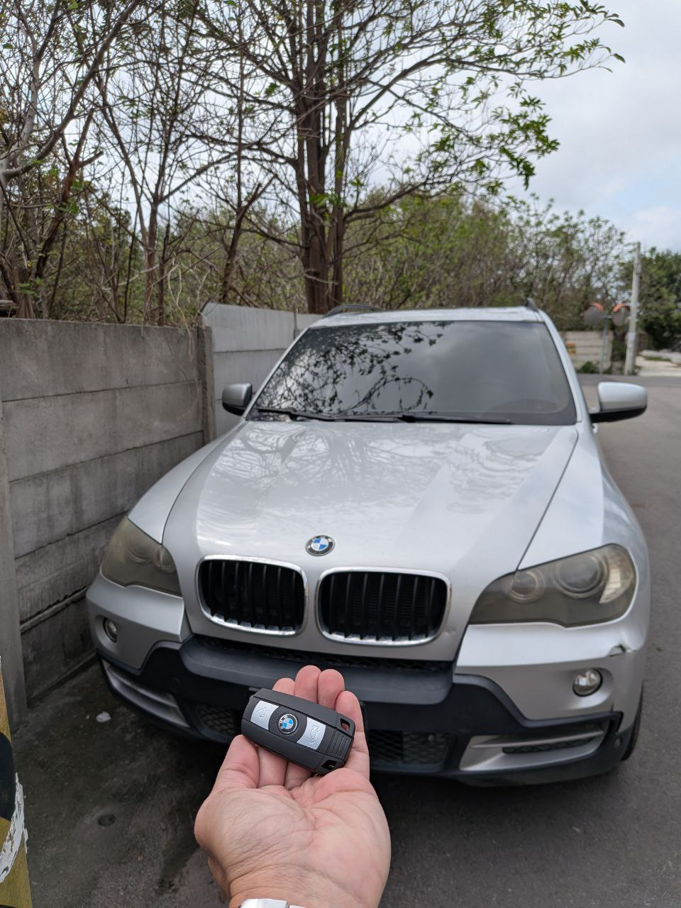
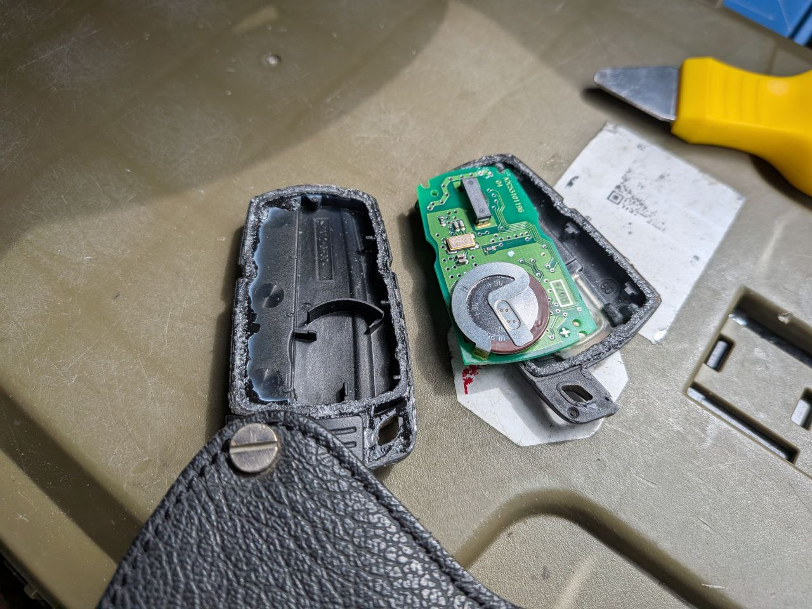
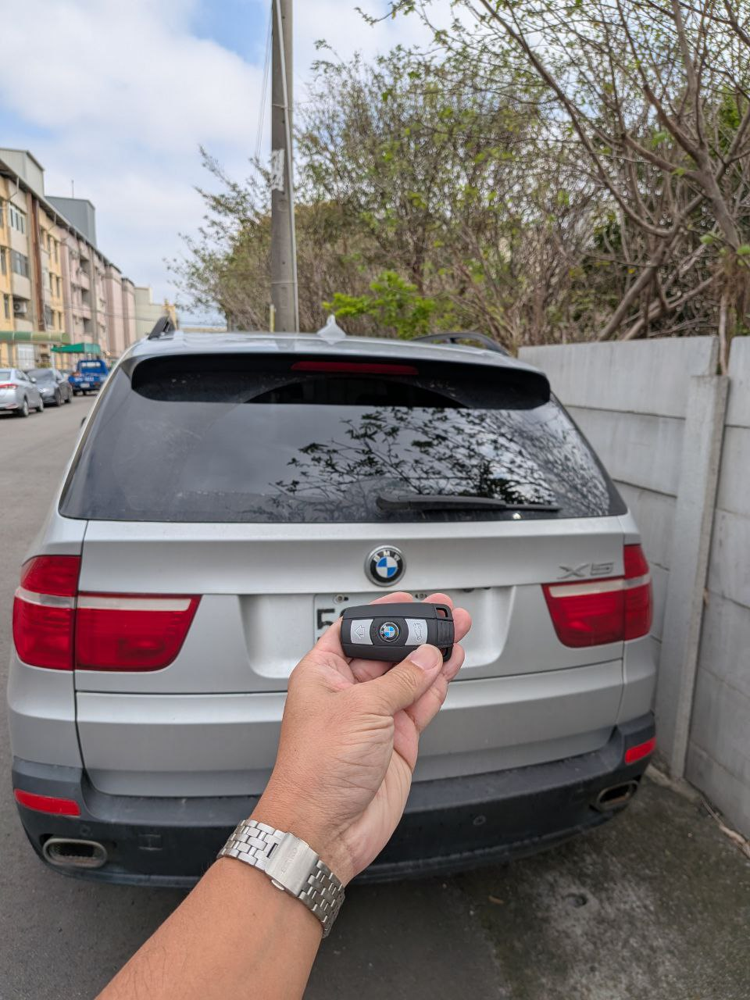

BMW X5 E70 遙控器充電電池耗盡救援：現場精準維修實錄
近日接到來自彰化市的求助電話。車主表示其愛車 BMW X5 (E70) 的遙控鑰匙在使用多年後，遙控功能完全失效，甚至無法透過遙控器解鎖車門，只能使用機械鑰匙手動開啟，非常不便。

BMW X5 彰化市現場救援：遙控失效診斷
技術分析：為什麼 BMW 鑰匙會遙控失效？
BMW E 系列（如 E70, E90, E60 等）的智慧鑰匙採用的是內部焊接式充電電池 (VL2020)。正常情況下，鑰匙插入插槽啟動後會自動充電。然而，若鑰匙長時間未使用或電池壽命到達極限（通常約 8-10 年），電池將完全耗盡且無法再儲存電量，導致遙控功能永久失效。

極致核心現場拆解：更換衰退的充電電池核心
極致核心的解決方案：現場精準維修
針對此類問題，傳統原廠的做法通常是「更換整把新鑰匙」，費用高昂且需等待數日。極致核心 ProCore 提供現場維修服務：
- 專業拆解：BMW 鑰匙為超音波密封，需具備經驗與專業工具才能在不破壞外殼的情況下開啟。
- 電池更換：精準解焊並更換全新高品質充電電池，確保儲電效率恢復如初。
- 功能測試：現場即刻測試遙控感應距離與引擎啟動數據，確保 100% 恢復功能。

維修完成：遙控功能完美恢復，當場交車
結果：免換新鑰匙，省時省錢！
經過約 40 分鐘的現場精準維修，這把 BMW X5 的鑰匙成功「起死回生」，遙控距離與感應靈敏度皆回到新車水準。車主不需支付原廠的高額換新費用，更不需等待漫長的備貨期。
BMW 鑰匙沒反應？遙控器壞了？
極致核心專攻 BMW/賓士全系列防盜系統與鑰匙維修。不論是電池耗盡、數據遺失或鑰匙全丟，我們在中彰投地區提供 24H 現場救援服務。
諮詢專業技師 (LINE ID: @420gknem)